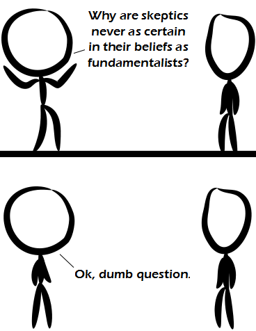

Comic JK 855
When I Feel Like It
⇤
<
?
>
⇥

⇤
<
?
>
⇥
Forum
.
RSS
.
Digg
.
Facebook
.
Reddit
.
Twitter
.
Stumbleupon
Enter your thoughts on number 855 here. Please, no spamming, trolling, or phreaking. I'm fundamentally certain that your mother is getting down and dirty with one of your dorky friends this very moment. Under what circumstance would anyone ask this..? > a fundamentalist that is frustrated by the apparent vagueness of skeptics... Skeptics ought to be more certain of their beliefs, because they only believe that which is unshakably true, and doubt everything else. >>in an ironic situation, or perhaps in a moment where they are about to stumble into an existential quandary of introspection and start on the path to enlightenment? Seems like a first panel got cut off, and we got dumped midway into the joke, and just got the punchline. DId not find it funny in the least. Except for climate septics of course. No amount of evidence will shake that "scepticism". >The climate is changing. Always has, always will. When it stops changing, everything on the planet would be dead within twenty years. Fifty, if we manage to construct decent life-support systems. >>citation needed >>>Skeptic. >>>+1 >>Indeed it does! Where I live the temperature can change about 10� in as short as five hours! >>>That's weather, not climate. Pay attention! >>Isn�t climate defined only over long periods of time, of about 30 years? Can it even change, and stop doing so, within 20 years? "Ok", not OK or Okay? This makes me deeply unhappy. >How about m'kay, m'kay? >>O-kay, any happier yet? >>> Maybe it's a grunt, like "uh" or "er." >>>> Like "awk!"? Best description I ever heard - climates what you expect, weathers what you get! >Except that's a completely inaccurate description of what they are. >>Not really. >>>Yes really. Firstly, weather never gets pluralized with an 's'. Secondly, climate is the general trend.